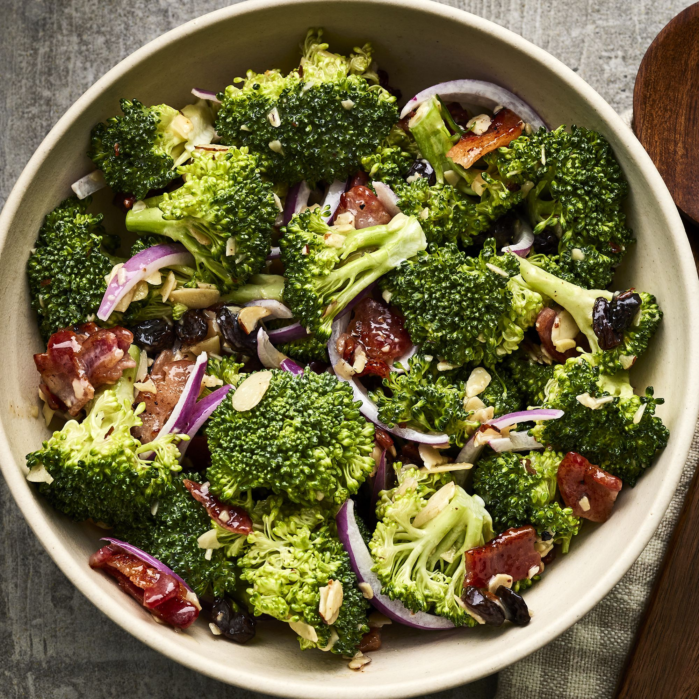

Salad

Description
This broccoli salad with cheese is requested at every family gathering. Let it be your next dish that they crave! I like this dish to be prepared at least two hours before serving. Be sure to have copies of the recipe on hand, as everyone wlil ask for it!
Ingredients
- 2 heads fresh broccoli, chopped
- 1 ½ cups sharp Cheddar cheese, shredded
- ½ large red onion, chopped
- ⅔ cup mayonnaise
- ¼ cup red wine vinegar
- ⅛ cup white sugar
- 2 teaspoons ground black pepper
- 1 teaspoon salt
- 1 teaspoon fresh lemon juice
Steps
- Combine broccoli, cheese, and onion in a large bowl.
- Whisk mayonnaise, red wine vinegar, sugar, pepper, salt, and lemon juice together in a small bowl; pour over salad and toss to combine. Cover and refrigerate untli ready to serve.